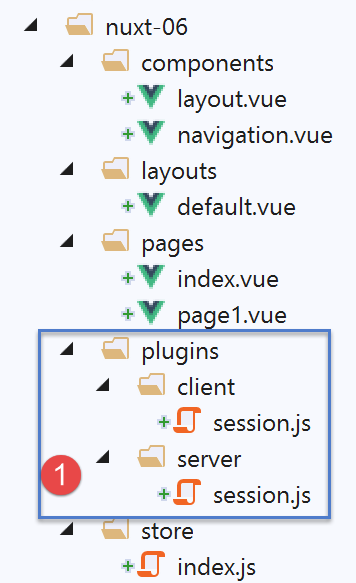
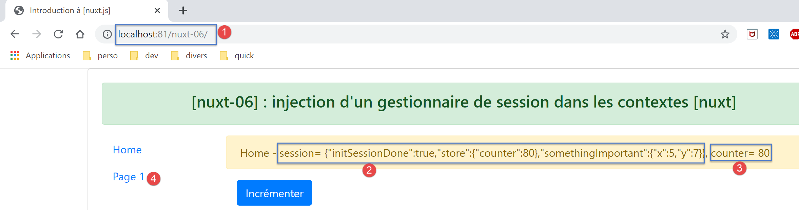
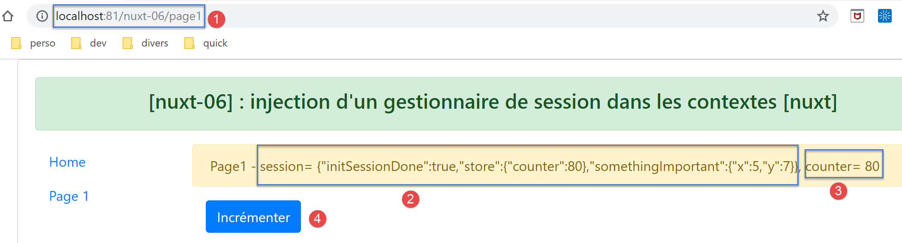

9. Ejemplo [nuxt-06]: inyección en el contexto de un gestor de sesión
9.1. Présentation
El ejemplo [nuxt-05] ha demostrado que es posible mantener el almacén incluso cuando el usuario fuerza llamadas al servidor. Los elementos del almacén son reactivos, de modo que, si se integran en vistas, estas reaccionan a los cambios del almacén. También puede ser conveniente mantener elementos a lo largo de los intercambios cliente/servidor sin que sean reactivos, simplemente porque no se muestran en las vistas. En ese caso, se pueden almacenar en la sesión sin que por ello estén en el almacén.
Se puede acceder fácilmente al almacén a través de propiedades como [context.app.$store] fuera de las vistas o [this.$store] dentro de las vistas. Nos gustaría tener algo similar para la sesión, algo como [context.app.$session] o [this.$session]. Veremos que esto es posible gracias al concepto de inyección. Sin embargo, no se pueden inyectar objetos en el contexto, sino solo funciones. Esta estará entonces disponible mediante las expresiones [context.app.$session()] o [this.$session()].
Por último, vamos a presentar el concepto [nuxt] de [plugin].
El ejemplo [nuxt-06] se obtiene inicialmente copiando el proyecto [nuxt-05]:

- En [1], añadiremos una carpeta [plugins];
9.2. el concepto de plugin [nuxt]
[nuxt] denomina [plugin] a cualquier código que se ejecute al iniciar la aplicación, incluso antes de que el servidor ejecute la función [nuxtServerInit], que hasta ahora era la primera función de usuario que se ejecutaba. Los complementos de la aplicación deben declararse en la clave [plugins] del archivo de configuración [nuxt.config.js]:
/*
** Plugins to load before mounting the App
*/
plugins: [
{ src: '~/plugins/client/session', mode: 'client' },
{ src: '~/plugins/server/session', mode: 'server' }
],
- líneas 5-6: un complemento se identifica mediante su ruta [src] y su modo de ejecución [mode]. [mode] puede tener tres valores:
- [client]: el complemento debe ejecutarse únicamente en el lado del cliente;
- [server]: el complemento debe ejecutarse únicamente en el lado del cliente;
- ausencia de la clave [mode]: en este caso, el complemento debe ejecutarse tanto en el lado del cliente como en el del servidor;
- líneas 5-6: hemos colocado nuestros dos complementos en una carpeta [plugins]. No es obligatorio hacerlo así. Los complementos pueden colocarse en cualquier lugar del árbol de directorios del proyecto. Del mismo modo, los nombres de las subcarpetas [client, server] son aquí arbitrarios;

9.3. El complemento [session] del servidor
El plugin [server / session.js] es el siguiente:
/* eslint-disable no-console */
export default (context, inject) => {
// gestión de la sesión del servidor
// ¿Existe alguna sesión?
let value = context.app.$cookies.get('session')
if (!value) {
// nueva sesión
console.log("[plugin session server], démarrage d'une nouvelle session")
value = initValue
} else {
// sesión existente
console.log("[plugin session server], reprise d'une session existante")
}
// definición de la sesión
const session = {
// contenido de la sesión
value,
// almacenamiento de la sesión en una cookie
save(context) {
context.app.$cookies.set('session', this.value, { path: context.base, maxAge: context.env.maxAge })
}
}
// se inyecta una función en [context, Vue] que convertirá la sesión en la actual
inject('session', () => session)
}
// valor inicial de la sesión
const initValue = {
initSessionDone: false
}
- línea 2: los complementos se ejecutan cada vez que hay una llamada al servidor: al iniciar y cada vez que el usuario fuerza una llamada al servidor escribiendo un URL manualmente:
- en primer lugar, se ejecutan los complementos del servidor;
- cuando el navegador del cliente ha recibido la respuesta del servidor, le toca el turno al plugin (o plugins) del cliente;
- línea 2: cualquier complemento, ya sea del cliente o del servidor, recibe dos parámetros:
- [context]: el contexto del servidor o del cliente, según quién ejecute el complemento;
- [inject]: una función que permite inyectar una función en el contexto del servidor o del cliente;
- El objetivo del complemento [server / session] es doble:
- definir una sesión (líneas 16-23);
- definir, dentro del contexto, una función [$session] que devolverá como resultado la sesión de la línea 16. Esto se hace en la línea 25;
- líneas 16-23: la sesión encapsulará sus datos en el objeto [value] de la línea 18;
- líneas 20-22: dispone de una función [save] que recibe como parámetro un objeto [context]. Es el código que la invoca el que le proporciona este contexto. Con este, la función [save] guarda el valor de la sesión, el objeto [value], en la cookie de sesión;
- línea 6: cuando se ejecuta el complemento [server / session], lo primero que hace es comprobar si el servidor ha recibido una cookie de sesión;
- si es así, el objeto [value] de la línea 6 representa el valor de la sesión, es decir, el conjunto de datos encapsulados en ella;
- en caso contrario, en las líneas 7-11, se establece el valor inicial de la sesión. Este será el objeto [initValue] de las líneas 29-31. Los elementos de la sesión se definirán en la función [nuxtServerInit], que se ejecuta después del complemento del servidor;
- línea 18: la notación [value] es un atajo para la notación [value:value]. El [value] de la izquierda es el nombre de una clave de objeto; el [value] de la derecha es el objeto [value] declarado en la línea 6;
- línea 25: al llegar a esta línea, la sesión se ha creado porque no existía o se ha recuperado de la solicitud HTTP del navegador del cliente;
- línea 25: se inyecta en el contexto del servidor una nueva función:
- el primer parámetro de [inject] es el nombre de la función que se crea, en este caso «session». [nuxt] le asignará, de hecho, el nombre «$session»;
- el segundo parámetro es la definición de la función. En este caso, la función [$session]
- no admitirá ningún parámetro;
- devolverá el objeto [session] de la línea 16;
- una vez ejecutado el complemento:
- la función [$session] estará disponible en [context.app.$session], donde está disponible el objeto [context], o [this.$session] en una vista o en el almacén [vuex];
- la función [$session] devuelve un objeto [session] con una clave única [value];
- al crearse inicialmente la sesión, el objeto [value] solo tiene una clave [initStoreDone] (líneas 29-31). La clave [initStoreDone:false] sirve para indicar que el almacén aún no se ha incluido en la sesión. Esto lo hará la función [nuxtServerInit];
9.4. Inicialización de la sesión
Una vez que el servidor haya ejecutado el complemento [session / server], este ejecutará el siguiente script [store / index.js]:
/* eslint-disable no-console */
export const state = () => ({
// contador
counter: 0
})
export const mutations = {
// incremento del contador en un valor [inc]
increment(state, inc) {
state.counter += inc
},
// sustitución del estado
replace(state, newState) {
for (const attr in newState) {
state[attr] = newState[attr]
}
}
}
export const actions = {
async nuxtServerInit(store, context) {
// ¿Quién ejecuta este código?
console.log('nuxtServerInit, client=', process.client, 'serveur=', process.server, 'env=', context.env)
// se espera a que finalice una promesa
await new Promise(function(resolve, reject) {
// Normalmente, aquí hay una función asíncrona
// la simulamos con una espera de un segundo
setTimeout(() => {
// inicialización de la sesión
initSession(store, context)
// Éxito
resolve()
}, 1000)
})
}
}
function initSession(store, context) {
// «store» es la variable que hay que inicializar
// se recupera la sesión
const session = context.app.$session()
// ¿Se ha inicializado ya la sesión?
if (!session.value.initSessionDone) {
// Se inicia un nuevo almacén
console.log("nuxtServerInit, initialisation d'une nouvelle session")
// se inicializa el almacén
store.commit('increment', 77)
// se añade el almacén a la sesión
session.value.store = store.state
// Se inicializa una nueva sesión
session.value.somethingImportant = { x: 2, y: 4 }
// la sesión ya está inicializada
session.value.initSessionDone = true
} else {
console.log("nuxtServerInit, reprise d'un store existant")
// se actualiza el almacén con el de la sesión
store.commit('replace', session.value.store)
}
// se guarda la sesión
session.save(context)
// registro
console.log('initSession terminé, store=', store.state, 'session=', session.value)
}
En comparación con el código del proyecto [nuxt-05], solo cambia la función [initSession] (antes initStore) de las líneas 38 a 60:
- línea 42: se recupera la sesión mediante la función [$session], que se ha inyectado en el contexto del servidor;
- línea 44: se comprueba si la sesión ya se ha inicializado;
- líneas 45-54: si no es así:
- línea 48: se inicializa el almacén;
- línea 50: se guarda el estado del almacén en la sesión;
- línea 52: se añade otro objeto [somethingImportant] a la sesión. Este no formará parte del almacén;
- línea 54: se indica que la sesión ya está inicializada;
- líneas 55-59: si la sesión ya estaba inicializada:
- línea 58: se inicializa el nuevo almacén con el contenido de la sesión;
- línea 61: la sesión se guarda en la cookie de sesión. Recordemos que esto consiste en incluir la cookie en la respuesta HTTP que el servidor enviará al navegador del cliente;
9.5. El complemento [client / session] del cliente
Una vez que el servidor haya ejecutado los scripts [plugins / server / session] y [store / index], enviará una de las páginas [index, page1] al navegador del cliente. En la respuesta HTTP del servidor se incluirá la cookie de sesión. Una vez que el navegador del cliente haya recibido la página, se ejecutarán los scripts del cliente incrustados en la página. A continuación, se ejecutará el complemento [client / session]:
/* eslint-disable no-console */
export default (context, inject) => {
// gestión de la sesión del cliente
// la sesión existe necesariamente, inicializada por el servidor
console.log('[plugin session client], reprise de la session du serveur')
// definición de la sesión
const session = {
// contenido de la sesión
value: context.app.$cookies.get('session'),
// almacenamiento de la sesión en una cookie
save(context) {
context.app.$cookies.set('session', this.value, { path: context.base, maxAge: context.env.maxAge })
}
}
// se inyecta una función en [context, Vue] que convertirá la sesión actual
inject('session', () => session)
}
- cuando se ejecuta el complemento de cliente, el navegador del cliente ya ha recibido la cookie de sesión;
- el objetivo del complemento [client] es inyectar también una función [$session] en el contexto del cliente. Esta función devolvería la sesión enviada por el servidor;
- línea 19: la función inyectada [$session] devolverá la sesión de las líneas 9-16;
- líneas 9-16: el objeto [session] gestionado por el cliente. Será una copia de la sesión enviada por el servidor;
- línea 11: el valor de la sesión del cliente se obtiene de la cookie de sesión enviada por el servidor [nuxt];
- líneas 13-15: al igual que en la sesión del servidor, la sesión del cliente cuenta con una función [save] que permite guardar el valor de la sesión, [this.value] (línea 14), en la cookie de sesión almacenada en el navegador;
9.6. La página [index]
La página [index] evoluciona de la siguiente manera:
<!-- página [index] -->
<template>
<Layout :left="true" :right="true">
<!-- navegación -->
<Navigation slot="left" />
<!-- mensaje-->
<template slot="right">
<b-alert show variant="warning"> Home - session= {{ jsonSession }}, counter= {{ $store.state.counter }} </b-alert>
<!-- botón -->
<b-button @click="incrementCounter" class="ml-3" variant="primary">Incrémenter</b-button>
</template>
</Layout>
</template>
<script>
/* eslint-disable no-undef */
/* eslint-disable no-console */
/* eslint-disable nuxt/no-env-in-hooks */
import Layout from '@/components/layout'
import Navigation from '@/components/navigation'
export default {
name: 'Home',
// componentes utilizados
components: {
Layout,
Navigation
},
computed: {
jsonSession() {
return JSON.stringify(this.$session().value)
}
},
// ciclo de vida
beforeCreate() {
// cliente y servidor
console.log('[home beforeCreate]')
},
created() {
// cliente y servidor
console.log('[home created], session=', this.$session().value)
},
beforeMount() {
// solo cliente
console.log('[home beforeMount]')
},
mounted() {
// solo cliente
console.log('[home mounted]')
},
// gestión de eventos
methods: {
incrementCounter() {
console.log('incrementCounter')
// incremento del contador en 1
this.$store.commit('increment', 1)
// modificación de la sesión
const session = this.$session()
session.value.store = this.$store.state
session.value.somethingImportant.x++
session.value.somethingImportant.y++
// guardar la sesión en la cookie de sesión
session.save(this.$nuxt.context)
}
}
}
</script>
Hay que tener en cuenta que esta página se ejecuta tanto en el lado del servidor como en el del cliente.
- línea 8: ahora se muestran tanto la sesión como el almacén;
- línea 30: [jsonSession] es una propiedad calculada que devuelve la cadena jSON con el valor de la sesión;
- línea 41: se muestra el valor de la sesión mediante la función inyectada [this.$session]. Esta existe tanto en el contexto del servidor como en el del cliente;
- línea 53: el método [incrementCounter] solo se ejecuta en el lado del cliente;
- línea 56: se incrementa el contador del store y se muestra como antes;
- línea 58: se recupera la sesión mediante la función inyectada [this.$session];
- línea 59: se actualiza el almacén de la sesión;
- líneas 60-61: se incrementan los atributos [somethingImportant.x, somethingImportant.y] de la sesión. Esto es solo para mostrar que una sesión puede servir para transportar algo más que el almacén;
- línea 63: la sesión se guarda en la cookie de sesión almacenada en el navegador. En una vista de cliente, el contexto de esta está disponible en [this.$nuxt.context];
El objetivo de la página [index] es mostrar que la sesión no es reactiva, mientras que el almacén sí lo es. Al incrementar los elementos de la sesión, se observará que la vista no se actualiza. La vista [page1] ofrece una solución a este problema.
9.7. La página [page1]
La página [page1] se obtiene copiando la página [index] y modificándola ligeramente:
<!-- página [index] -->
<template>
<Layout :left="true" :right="true">
<!-- navegación -->
<Navigation slot="left" />
<!-- mensaje-->
<template slot="right">
<b-alert show variant="warning"> Page1 - session= {{ jsonSession }}, counter= {{ $store.state.counter }} </b-alert>
<!-- botón -->
<b-button @click="incrementCounter" class="ml-3" variant="primary">Incrémenter</b-button>
</template>
</Layout>
</template>
<script>
/* eslint-disable no-undef */
/* eslint-disable no-console */
/* eslint-disable nuxt/no-env-in-hooks */
import Layout from '@/components/layout'
import Navigation from '@/components/navigation'
export default {
name: 'Page1',
// componentes utilizados
components: {
Layout,
Navigation
},
data() {
return {
session: {}
}
},
computed: {
jsonSession() {
return JSON.stringify(this.session.value)
}
},
// ciclo de vida
beforeCreate() {
// cliente y servidor
console.log('[page1 beforeCreate]')
},
created() {
// cliente y servidor
// se incluye la sesión en las propiedades reactivas de la página
this.session = this.$session()
// registro
console.log('[page1 created], session=', this.session.value)
},
beforeMount() {
// solo cliente
console.log('[page1 beforeMount]')
},
mounted() {
// solo cliente
console.log('[page1 mounted]')
},
// gestión de eventos
methods: {
incrementCounter() {
console.log('incrementCounter')
// incremento del contador en 1
this.$store.commit('increment', 1)
// modificación de la sesión
this.session.value.store = this.$store.state
this.session.value.somethingImportant.x++
this.session.value.somethingImportant.y++
// guardar la sesión en la cookie de sesión
this.session.save(this.$nuxt.context)
}
}
}
</script>
- línea 47: la principal diferencia radica en que se incluye la sesión actual en las propiedades de la página (líneas 29-33). Esto hará que, a partir de ahora, la sesión sea reactiva. Cuando la función [incrementCounter] incremente los elementos de la sesión, se actualizará la vista [page1];
9.8. Ejecución del proyecto
Antes de ejecutar el proyecto, comprueba la cookie de sesión de tu navegador y, si existe, elimínala para que el servidor cree una sesión nueva:

Ahora solicitemos el URL y el [http://localhost:81/nuxt-06/]:

Los registros del navegador son entonces los siguientes:

- en [2], el servidor inicia una nueva sesión en el complemento [session] del servidor;
- en [3], esta nueva sesión se inicializa en [nuxtServerInit];
- en [4], la nueva sesión tal y como se conoce en el servidor;
- en [5], el cliente ha recuperado correctamente esta sesión;
Ahora incrementemos el contador tres veces:

- en [3], el contador se ha incrementado correctamente, pero no la sesión en [2]. Mientras que [3] muestra el almacén, que está activo, [2] muestra la sesión, que no está activa:
Ahora recarguemos la página (F5). Tras esta recarga, los registros son los siguientes:

- en [2], vemos que el servidor ha recibido una cookie de sesión enviada por el navegador del cliente;
- en [4], se observa que el almacén no se reinicia, sino que se retoma de la sesión recibida;
- en [4-5]: se observa que todos los atributos de la sesión se han incrementado tres veces correctamente;
La página enviada por el servidor es entonces la siguiente:

La conclusión que se extrae de esta página es que la sesión puede transportar otros elementos además del «store», pero estos no son reactivos.
Ahora hagamos clic en el enlace [Page 1] [4]. La nueva página que se muestra es la siguiente:

A continuación, utilicemos el botón [Incrémenter] tres veces. La página pasa a ser la siguiente:

Esta vez, la sesión se muestra correctamente en [2]. Aquí es interactiva. Esto se puede ver en los registros:

- en [1-3], los valores de la sesión;
- en [4-6], los getters y setters reactivos de los elementos de la sesión;
Ahora hagamos clic en el enlace [Home] [4]. Aparece la siguiente página:

A continuación, hagamos doble clic en el botón [Incrémenter] [4]. La página pasa a ser la siguiente:

Observamos que, también en este caso, la sesión se ha vuelto reactiva: [2].
Solicitemos el valor devuelto por la función [this.$session()]:

- en la pestaña [Vue], seleccionamos la página actual [Home] para obtener su referencia [$vm0] [3];
A continuación, en la pestaña [Console] [4], solicitamos el valor de la función [$vm0.$session()]:

- en [5], vemos que la sesión se ha vuelto activa, cuando inicialmente no lo estaba;
- en [6], solicitamos ver el valor de la sesión;
- en [7-8], se descubre que este valor también se ha vuelto reactivo;
Por lo tanto, nos encontramos ante un resultado inesperado: si un elemento se vuelve reactivo en una página porque se ha incluido en las propiedades de la página, entonces también se vuelve reactivo en las páginas en las que no forma parte de las propiedades.
9.9. Conclusion
El ejemplo [nuxt-05] demostró que se podía mantener el almacén a lo largo de las solicitudes realizadas al servidor. El ejemplo [nuxt-06] hace lo mismo con un objeto al que hemos llamado [session] por analogía con la sesión web. Hemos visto que esta sesión podía tener las mismas propiedades que el almacén [Vuex] y volverse también reactiva, aunque de forma nativa no lo fuera.
Entonces, ¿qué interés tiene el almacén [Vuex]? Debo admitir que, por el momento, no lo he visto claro. Es probable que se me haya escapado algo. Así que, en caso de duda, recomendaría utilizar:
- un almacén [Vuex] para guardar todo lo que deba compartirse entre las páginas del cliente, y lo que, en su caso, deba compartirse entre el cliente y el servidor;
- una cookie de sesión si el almacén debe mantenerse durante una llamada del cliente al servidor, en cuyo caso la sesión solo contendrá el almacén;
Los ejemplos [nuxt-05] y [nuxt-06] tenían como objetivo mostrar cómo se podía garantizar la continuidad de la aplicación cuando el usuario fuerza la llamada al servidor introduciendo manualmente URL. Cabe recordar que el comportamiento por defecto en este caso es el reinicio de la aplicación, con lo que se pierde su estado actual.